Queue 1
4T San Francisco Fog Overlay 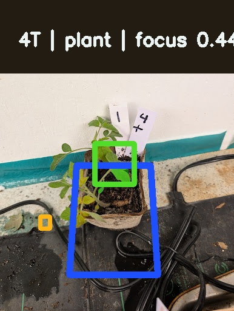
Crop 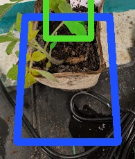
Severity 0.690
Readiness low
Anchor plant
Focus 0.444
Neighbor Spill 69.2%
In-Pot Spill 64.9%
Coverage 3.5% High spill case. Treat the current overlay as a hint only and separate target leaves from adjacent pots before tracing.
Foreign foliage is still entering the target crop or crowding it too closely; this pot is a good candidate for custom pot-mask labeling.
Original | Overlay | Crop | Annotate Crop
Queue 2
29T Sunset's Red Horizon Overlay 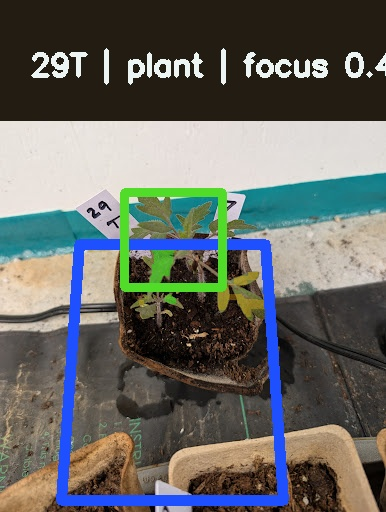
Crop 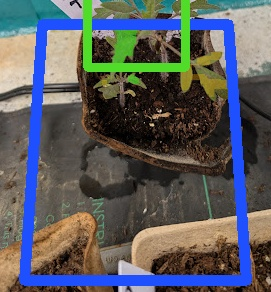
Severity 0.641
Readiness low
Anchor plant
Focus 0.457
Neighbor Spill 64.2%
In-Pot Spill 59.9%
Coverage 1.5% High spill case. Treat the current overlay as a hint only and separate target leaves from adjacent pots before tracing.
Foreign foliage is still entering the target crop or crowding it too closely; this pot is a good candidate for custom pot-mask labeling.
Original | Overlay | Crop | Annotate Crop
Overlay 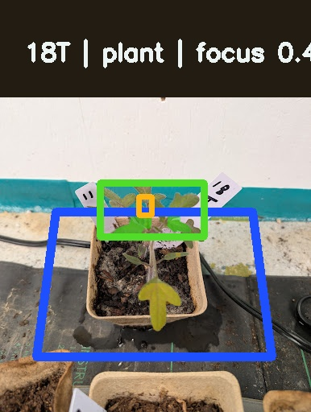
Crop 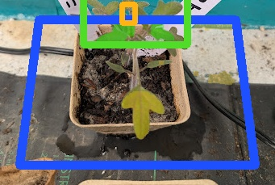
Severity 0.601
Readiness moderate
Anchor plant
Focus 0.485
Neighbor Spill 64.8%
In-Pot Spill 64.0%
Coverage 3.2% High spill case. Treat the current overlay as a hint only and separate target leaves from adjacent pots before tracing.
Foreign foliage is still entering the target crop or crowding it too closely; this pot is a good candidate for custom pot-mask labeling.
Original | Overlay | Crop | Annotate Crop
Overlay 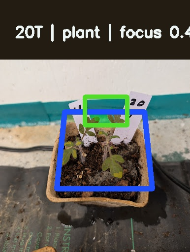
Crop 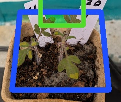
Severity 0.561
Readiness moderate
Anchor plant
Focus 0.489
Neighbor Spill 59.1%
In-Pot Spill 52.7%
Coverage 3.2% High spill case. Treat the current overlay as a hint only and separate target leaves from adjacent pots before tracing.
Foreign foliage is still entering the target crop or crowding it too closely; this pot is a good candidate for custom pot-mask labeling.
Original | Overlay | Crop | Annotate Crop
Queue 5
1T Nikolayev Yellow Cherry Overlay 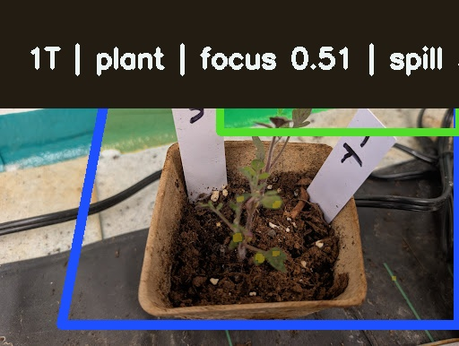
Crop 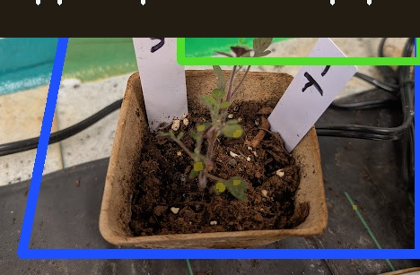
Severity 0.560
Readiness low
Anchor plant
Focus 0.514
Neighbor Spill 51.6%
In-Pot Spill 55.2%
Coverage 4.1% Weak focus and neighbor spill combine here. Verify the pot center manually before deciding which canopy belongs to the target pot.
Foreign foliage is still entering the target crop or crowding it too closely; this pot is a good candidate for custom pot-mask labeling.
Original | Overlay | Crop | Annotate Crop
Queue 6
32T Sunset's Red Horizon Overlay 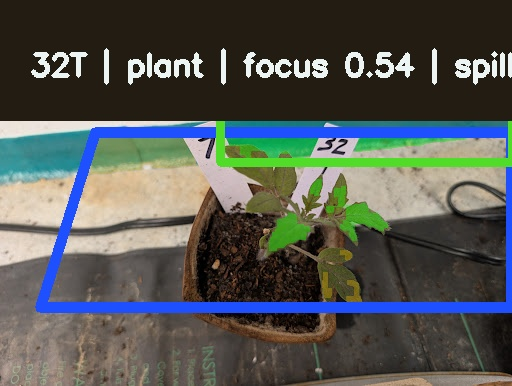
Crop 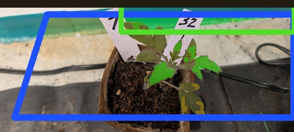
Severity 0.531
Readiness low
Anchor plant
Focus 0.540
Neighbor Spill 45.1%
In-Pot Spill 42.6%
Coverage 7.5% Weak focus and neighbor spill combine here. Verify the pot center manually before deciding which canopy belongs to the target pot.
Foreign foliage is still entering the target crop or crowding it too closely; this pot is a good candidate for custom pot-mask labeling.
Original | Overlay | Crop | Annotate Crop
Queue 7
5T San Francisco Fog Overlay 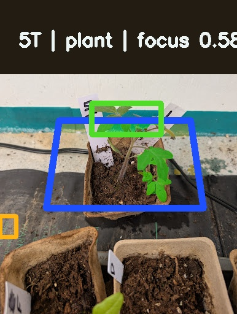
Crop 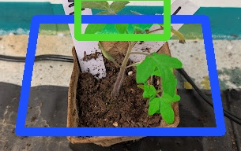
Severity 0.479
Readiness moderate
Anchor plant
Focus 0.578
Neighbor Spill 45.2%
In-Pot Spill 32.6%
Coverage 13.7% Moderate overlap. Trace the pot interior first, then keep the canopy tight to that boundary and exclude crossing leaves.
Foreign foliage is still entering the target crop or crowding it too closely; this pot is a good candidate for custom pot-mask labeling.
Original | Overlay | Crop | Annotate Crop
Overlay 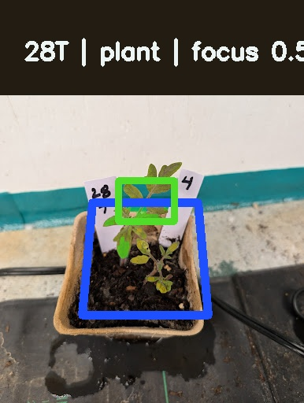
Crop 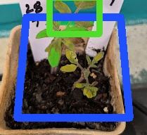
Severity 0.444
Readiness moderate
Anchor plant
Focus 0.589
Neighbor Spill 42.8%
In-Pot Spill 34.3%
Coverage 5.3% Moderate overlap. Trace the pot interior first, then keep the canopy tight to that boundary and exclude crossing leaves.
Foreign foliage is still entering the target crop or crowding it too closely; this pot is a good candidate for custom pot-mask labeling.
Original | Overlay | Crop | Annotate Crop
Queue 9
30T Sunset's Red Horizon Overlay 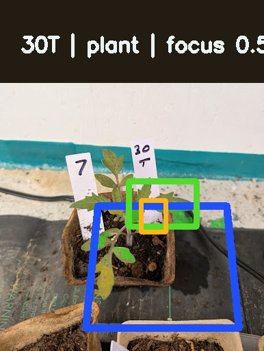
Crop 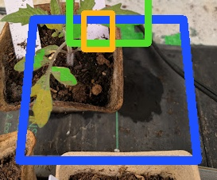
Severity 0.406
Readiness moderate
Anchor plant
Focus 0.580
Neighbor Spill 36.3%
In-Pot Spill 36.4%
Coverage 6.3% Moderate overlap. Trace the pot interior first, then keep the canopy tight to that boundary and exclude crossing leaves.
Foreign foliage is still entering the target crop or crowding it too closely; this pot is a good candidate for custom pot-mask labeling.
Original | Overlay | Crop | Annotate Crop
{kind=link}
{kind=link}
{kind=link}
{kind=link}
{kind=link}
{kind=link}
{kind=link}
{kind=link}
{kind=link}